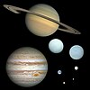

planet

Definition: A planet is a large, rounded astronomical body that is neither a star nor its remnant. The best available theory of planet formation is the nebular hypothesis, which posits that an interstellar cloud collapses out of a nebula to create a young protostar orbited by a protoplanetary disk. Planets grow in this disk by the gradual accumulation of material driven by gravity, a process called accretion. The Solar System has at least eight planets: the terrestrial planets Mercury, Venus, Earth and Mars, and the giant planets Jupiter, Saturn, Uranus and Neptune. These planets each rotate around an axis tilted with respect to its orbital pole. All planets of the Solar System other than Mercury possess a considerable atmosphere, and some share such features as ice caps, seasons, volcanism, hurricanes, tectonics, and even hydrology. Apart from Venus and Mars, the Solar System planets generate magnetic fields, and all except Venus and Mercury have natural satellites. The giant planets bear planetary rings, the most prominent being those of Saturn.
Source: Wikipedia
Wikipedia Page (Something wrong with this association? Let us know.)
Wikidata Page (Something wrong with this association? Let us know.)